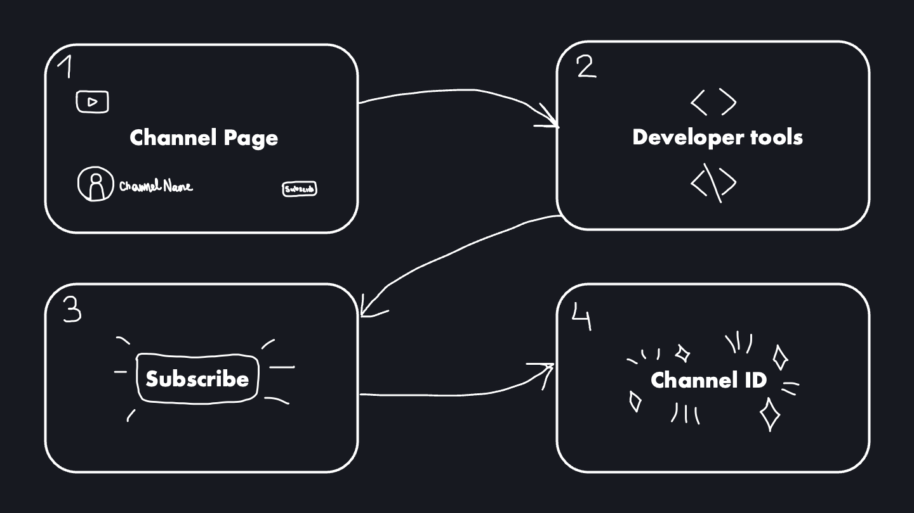
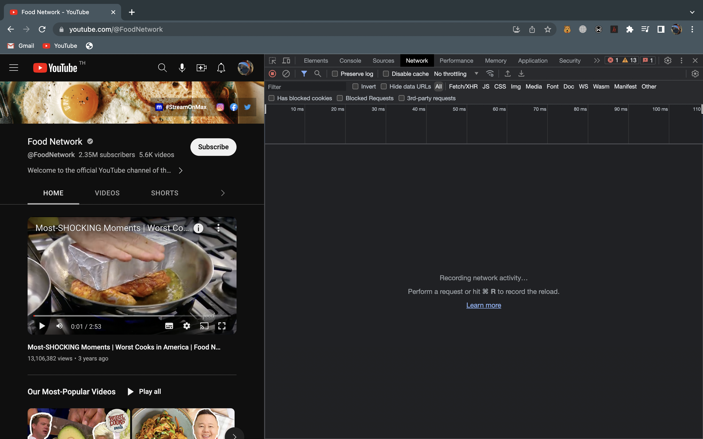
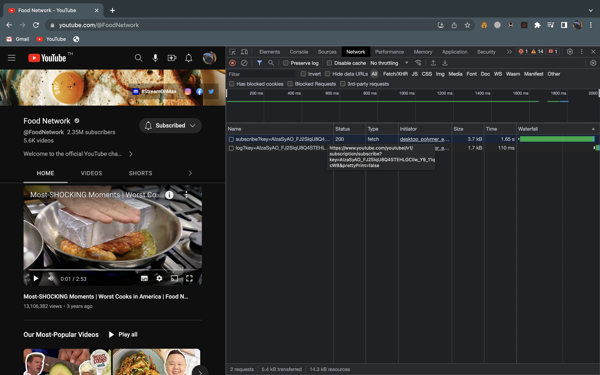
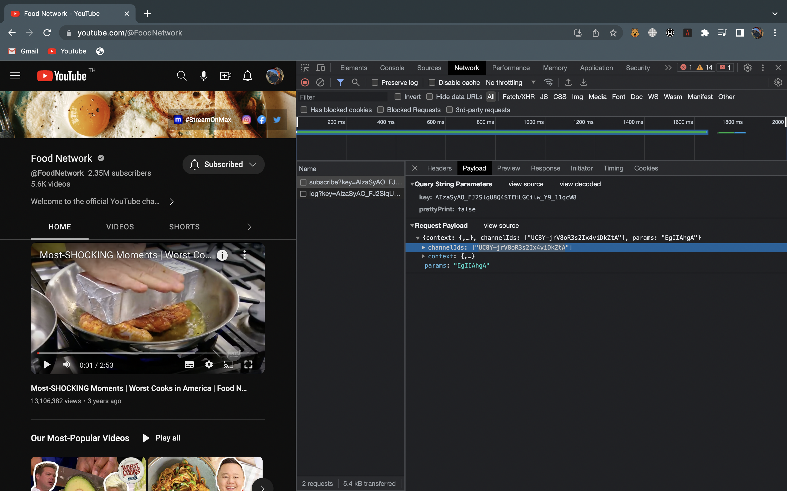

How to get a YouTube channel ID for YouTube API
While making this project on Russian independent media, I came across an issue with getting channel IDs for YouTube API. Some channels do not have the ID embedded in the channel page source code, so here is a lifehack I found on StackOverflow that allows you to easily get any YT channel's ID. It may sound a little complicated, but it 100% works.
-
Open the main YouTube channel page in the Google Chrome Browser. Right-click and choose Developer tools ('Inspect' tab).

-
Open the 'Network' tab in the opened window.

-
Click the 'Subscribe' button. Find the POST request issued by the subscribe action in the Network tab and click it.

-
In the 'Payload' tab you'll find the 'channelIds' field. The list contains only one item - the desired channel ID.
